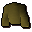

Shaman robe

| Config name | shaman_robe |
| Item id | 2397 |
| Value | 40 gp |
| Weight | 4lb |
| Members | Yes |
| Tradeable | No |
| Stackable | No |
| Options | Search |
| Defined in | scripts/quests/quest_itwatchtower/configs/quest_itwatchtower.obj |
Shaman robe
A tattered old robe.
Show 1 ground spawn on the world map → Open in knowledge graph →
Ground spawns
| Area | Coordinates | Level | Count | Map |
|---|---|---|---|---|
| Wizards' Guild (underground) | 2617, 9437 | 0 | 1 | view |
Quests
Referenced in scripts
scripts/quests/quest_itwatchtower/scripts/quest_itwatchtower.rs2